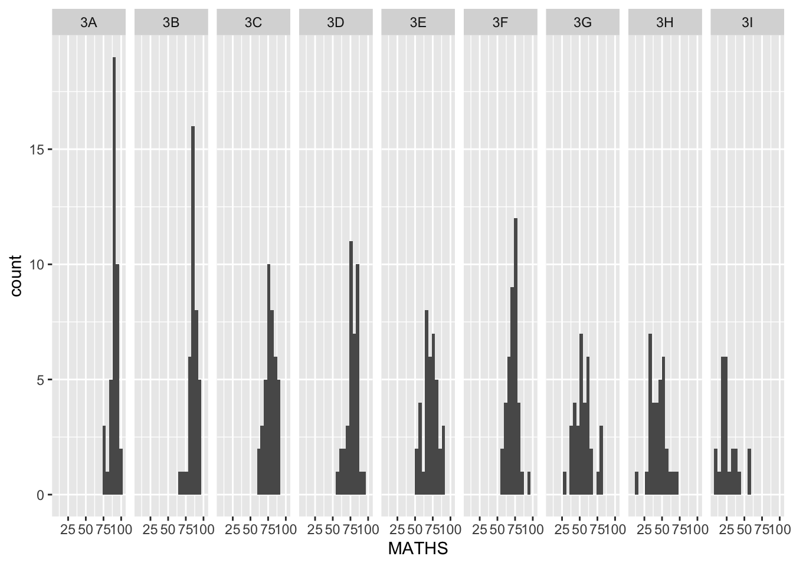
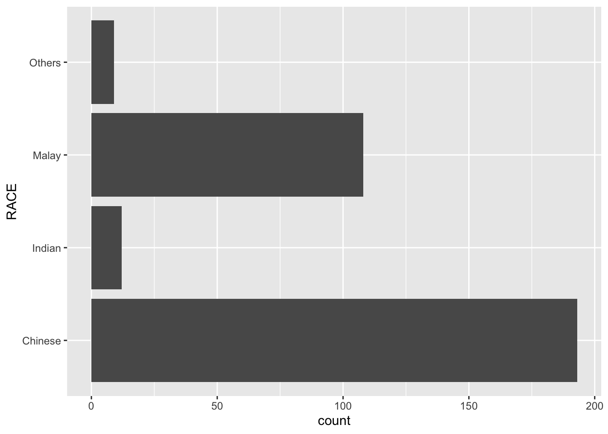
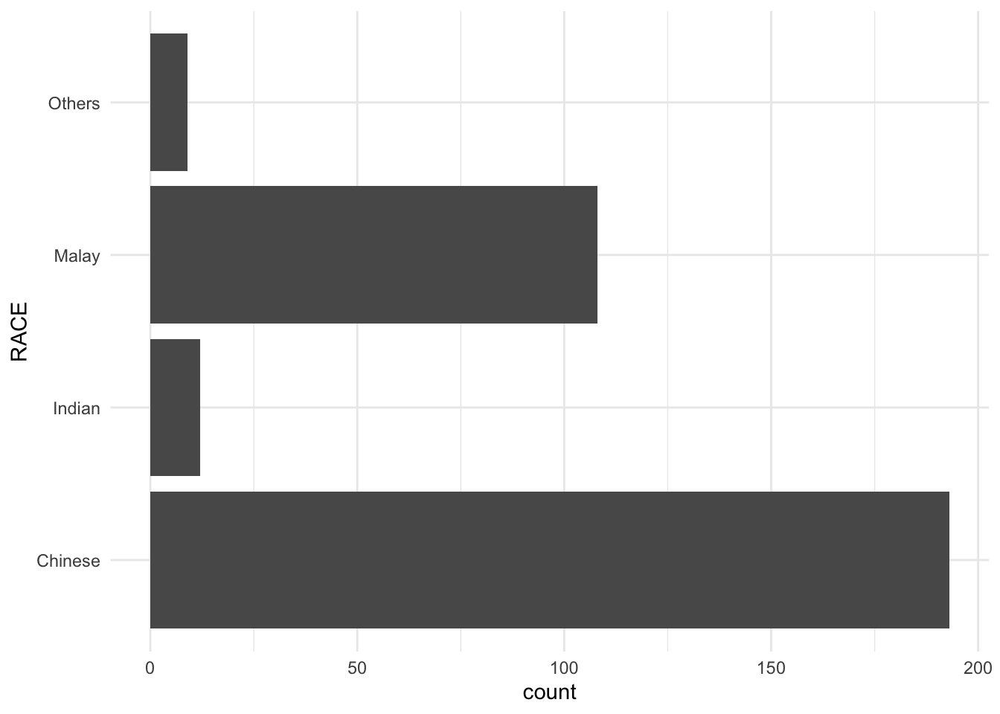

pacman::p_load(tidyverse)Hands-on Exercise 1 - A Layered Grammar of Graphics: ggplot2 methods
1.2. Getting Started
1.2.1. Installing and loading the required libraries
The code chunk below uses p_load() from the pacman package. This function automatically checks whether the tidyverse package is installed.
- If not installed, it installs it.
- If already installed, it simply loads it into the R environment.
This ensures that all required libraries are ready to use without manual installation.
1.2.2. Importing the data
The function read_csv() from the readr package (part of the tidyverse) is used to import datasets into R.
In this example, the dataset Exam_data.csv contains exam grades of P3 students from a local school in Singapore.
ü߆ Purpose: To load the data into R for analysis.
üîΩ The code below performs this task:
exam_data <- read_csv("data/Exam_data.csv", show_col_types = FALSE)üìã Preview of the data:
| ID | CLASS | GENDER | RACE | ENGLISH | MATHS | SCIENCE |
|---|---|---|---|---|---|---|
| Student321 | 3I | Male | Malay | 21 | 9 | 15 |
| Student305 | 3I | Female | Malay | 24 | 22 | 16 |
| Student289 | 3H | Male | Chinese | 26 | 16 | 16 |
| Student227 | 3F | Male | Chinese | 27 | 77 | 31 |
| Student318 | 3I | Male | Malay | 27 | 11 | 25 |
| Student306 | 3I | Female | Malay | 31 | 16 | 16 |
1.3. Introducing ggplot
Think of your dataset like a box of puzzle pieces üß© ‚Äî full of insights, but scattered and unordered.
What if you had a visual guide to arrange those pieces into something meaningful?
That’s the role of ggplot2, a powerful R package based on the Grammar of Graphics — a framework that structures data into layered, interpretable visuals.
What makes a plot meaningful?
Just as a sentence has nouns, verbs, and punctuation,
a ggplot is composed of data, aesthetics, geoms, and themes — each layer adding clarity.
Each layer helps clarify the story you want to tell with your data.
Why choose ggplot2
- ✅ Declarative: Describe what you want to show — not how to draw it
- üß± Layered: Start simple, then stack components to add meaning
- üé® Publication-ready: Clean and polished visuals by default
For more details, explore the official documentation:
https://ggplot2.tidyverse.org
1.3.1 R Graphics VS ggplot
First, let us compare how R Graphics (Base R) and ggplot2 each plot a histogram of the Maths scores.
hist(exam_data$MATHS,
main = "Histogram of exam_data$MATHS",
col = "grey")ggplot(data = exam_data, aes(x = MATHS)) +
geom_histogram(
bins = 10,
boundary = 100,
color = "black",
fill = "grey"
) +
ggtitle("Distribution of Maths scores") +
xlab("MATHS") +
ylab("Count") +
theme_minimal()
Why ggplot2 is preferred
Layered Grammar
ggplot2builds plots incrementally. You can add layers step-by-step (e.g., points, lines, labels), making it intuitive for complex visuals.Aesthetic Mapping
Easily map data to visual features like color, shape, or size — enabling richer, multidimensional graphics.Faceting Made Easy
Explore subgroups withfacet_wrap()orfacet_grid()— ideal for comparing distributions or trends across categories.Professional Appearance
Plots look polished by default and can be styled with built-in themes (theme_minimal(),theme_classic(), etc.).Consistent Syntax
One consistent framework to produce many chart types — making your code easier to read, write, and reuse.
Compared to base R, ggplot2 encourages a more thoughtful design process, supports deeper customization, and improves reproducibility — especially in analytical reports or presentations.
1.4. Grammar of Graphics
üìê How do we turn data into meaningful visuals?
The Grammar of Graphics, introduced by Leland Wilkinson (1999), offers a conceptual blueprint for crafting statistical graphics.
It breaks a plot into fundamental parts — data, aesthetics, geometry, and scales — each layered together to form a coherent visual narrative.
Core Concepts
- Data: What you’re visualizing
- Aesthetics: How variables are visually encoded (x, y, color, size)
- Geometries: The shapes that represent data (bars, points, lines)
- Scales & Coordinates: How values are visually interpreted
- Themes & Facets: Styling and structure
Why it works
A well-formed graphic using this grammar:
- Emphasizes structure over styling
- Encourages layered thinking — each layer adds clarity
- Ensures visual consistency across chart types
- Facilitates analytical storytelling by design
üìñ Explore more:
- The Grammar of Graphics – Springer
- ggplot2 – tidyverse
1.4.1 A Layered Grammar of Graphics
ggplot2 is inspired by Leland Wilkinson’s Grammar of Graphics. It helps you build plots layer by layer, where each part contributes a unique role to your final visualization.

üî¢ Data
The starting point of any plot — your dataset. All other layers build on this.
üé® Aesthetics
Maps your data to visual elements like position, color, shape, or size. This layer gives structure to your graphic.
üìê Geometries
These are the grap hical marks — like bars, lines, or points — that display your data.
üß© Facets
Faceting allows you to split data into subplots for easier comparison across categories.
üìä Statistics
Applies transformations (e.g., mean, median, count) that help summarize or highlight trends in your data.
üß≠ Coordinates
Controls the spatial layout of your plot — for example, Cartesian or polar coordinates.
üé≠ Themes
Controls the look and feel of your plot: fonts, backgrounds, gridlines, titles, and more.
Reference:
Wickham, H. (2010). A layered grammar of graphics.
Journal of Computational and Graphical Statistics, 19(1), 3–28.
1.5. Essential Grammatical Elements in ggplot2: data
Recalling, the ggplot2 function, using the code chunk below
ggplot(data=exam_data)
üìù Note
- A blank canvas appears.
ggplot()initializes a ggplot object.
- The data argument defines the dataset to be used for plotting.
- If the dataset is not already a data.frame, it will be converted to one by
fortify().
1.6. Essential Grammatical Elements in ggplot2: Aesthetic Mappings
Aesthetic mappings in ggplot2 tell R how to visually represent your data. Think of it as assigning roles to each variable — like who controls the color, shape, size, or position in the plot.
These visual roles are defined using the aes() function.
Each aes() call helps ggplot2: - Know which variable to display - Understand how to display it - Apply these settings across layers (like geom_bar(), geom_point(), etc.)
✨ Example: Add Aesthetic Elements
ggplot(data = exam_data,
aes(x = MATHS))
1.7. Essential Grammatical Elements in ggplot2: geom
üß± Geometric Elements in ggplot2: geom_*()
Geometric objects (or geoms) are the building blocks that turn your data into visual marks. Think of them as the brushstrokes on your data canvas. Each geom_*() function tells ggplot2 how to represent your data visually.
Common Geoms and Their Use Cases
geom_point()→ Shows individual data points (great for scatter plots)geom_line()→ Connects points with lines (perfect for trendlines or time series)geom_col()→ Displays vertical bars with height representing valuesgeom_bar()→ Automatically counts and displays frequency in barsgeom_histogram()→ Visualizes distributions by grouping numeric values into binsgeom_boxplot()→ Compares distributions using five-number summariesgeom_density()→ Smooths distributions for a more fluid shapegeom_polygon()andgeom_map()→ Great for creating shapes or maps
✨ Pro Tip!
A plot must include at least one geom_*() function. Want to add more? Just chain them with the + operator!
üëâ For the full list of geoms and examples, check out the official ggplot2 reference.
1.7.1. Geometric Objects: geom_bar
Want to see how frequently each category appears in your dataset? geom_bar() is your go-to tool for this.
The following code builds a bar chart that counts and displays the number of observations for each RACE in the dataset.
ggplot(data = exam_data,
aes(x = RACE, fill = RACE)) +
geom_bar() +
scale_fill_manual(values = c("Chinese" = "skyblue",
"Malay" = "seagreen",
"Indian" = "tomato",
"Others" = "gold"))1.7.2. Geometric Objects: geom_dotplot
A dot plot is an effective way to display individual observations. Each dot represents a single data point and is stacked within bins along a continuous axis, typically the x-axis. This makes it a great choice for visualizing distributions while maintaining detail at the individual level.
The function geom_dotplot() from ggplot2 allows you to create dot plots with flexible options.
ggplot(data = exam_data,
aes(x = MATHS)) +
geom_dotplot(dotsize = 0.5)
⚠️ Caution on Y-Axis Interpretation
The y-axis in dot plots simply shows how many dots are stacked. It doesn’t represent an actual numerical scale and may mislead if interpreted as such.
Enhancing Dot Plot Clarity
To make your dot plot more accurate and aesthetically clear, you can:
- Adjust bin width to define horizontal spacing using
binwidth - Remove y-axis labels for cleaner presentation using
scale_y_continuous()
ggplot(data = exam_data,
aes(x = MATHS)) +
geom_dotplot(binwidth = 2.5,
dotsize = 0.5) +
scale_y_continuous(NULL,
breaks = NULL)
üß© What‚Äôs Happening Here?
binwidth = 2.5ensures dots are grouped at consistent intervals.scale_y_continuous(NULL, breaks = NULL)removes the y-axis for a cleaner, more truthful visual.
1.7.3. Geometric Objects
Below is a simple example using the MATHS scores from the exam_data dataset:
ggplot(data = exam_data,
aes(x = MATHS)) +
geom_histogram()
This creates a default histogram using 30 bins, which is often fine — but not always ideal.
✨ Customizing Your Bins
To make your histogram more insightful, adjust the bin size using either:
bins = n: specify the number of bins
binwidth = w: specify the width of each bin
ggplot(data = exam_data,
aes(x = MATHS)) +
geom_histogram(bins = 15)This example reduces the number of bins to 15, giving a broader view of the data distribution.
1.7.4. Modifying a geometric object by changing geom()
Adjusting the appearance of histograms can improve clarity and highlight important trends. The following modifications demonstrate how to refine the default histogram:
- The
binsargument sets the number of intervals (e.g., 20 bins). - The
fillargument defines the interior color of the bars (e.g., light blue). - The
colorargument specifies the border color for each bar (e.g., black).
ggplot(data = exam_data,
aes(x = MATHS)) +
geom_histogram(bins = 20,
color = "black",
fill = "light blue")
Styling Insight
Refined styling parameters allow for clearer visual distinctions between data segments, enhancing overall interpretation without altering the underlying structure.
1.7.5. Modifying a geometric object by changing aes()
When using aes() to define aesthetics within ggplot2, visual elements can be dynamically adjusted based on variables in the dataset. In the example below, the fill aesthetic is mapped to the GENDER variable, resulting in differentiated colors for each gender group in the histogram.
ggplot(data = exam_data,
aes(x = MATHS,
fill = GENDER)) +
geom_histogram(bins = 20,
color = "grey30")
üí° Tip
Mapping aesthetics within aes() enables color, fill, and even transparency (alpha) to reflect group-specific values — ideal for highlighting subgroup patterns in the data.
1.7.6. Geometric Objects: geom-density()
geom_density() offers a smooth visual representation of a numeric distribution by applying kernel density estimation. It serves as a more polished alternative to histograms, particularly for continuous data with an underlying pattern.
To visualize the distribution of MATHS scores in the exam_data, a simple density plot can be constructed:
ggplot(data = exam_data,
aes(x = MATHS)) +
geom_density()
This produces a continuous curve that reflects the probability density of the data.
Tip
For grouped comparisons, map a grouping variable (e.g., GENDER) to the colour or fill aesthetic inside aes(). This will overlay separate density lines, making it easier to compare distributions.
ggplot(data = exam_data,
aes(x = MATHS, colour = GENDER)) +
geom_density()
This allows side-by-side visual analysis of score distributions for different gender groups, offering insights into performance patterns.
1.7.7. Geometric Objects: geom_boxplot
The geom_boxplot() function is used to display the distribution of continuous data through five key summary statistics — including the median, quartiles, and potential outliers.
This type of plot provides a clear overview of how data is spread across different groups. In the following example, the distribution of MATHS scores is shown across gender groups.
ggplot(data = exam_data,
aes(y = MATHS,
x = GENDER)) +
geom_boxplot()
Tip
The boxplot shows the interquartile range (IQR), median, and any individual outliers beyond the whiskers.
Notched Boxplot Comparison
Notches are used in box plots to help visually assess whether the medians of distributions differ. If the notches do not overlap, this is evidence that the medians are different.
Below is a version of the boxplot with the notch = TRUE option enabled:
ggplot(data = exam_data,
aes(y = MATHS,
x = GENDER)) +
geom_boxplot(notch = TRUE)
Interpretation Hint
Non-overlapping notches suggest that the medians differ significantly between groups.
1.7.8. Geometric Objects: geom_violin
The geom_violin() function provides a way to visualize data distribution through a mirrored density plot. Violin plots are especially useful when comparing multiple groups, as they combine the features of a boxplot with a kernel density estimate — offering more insight into the shape of the distribution.
Unlike traditional density curves that can become visually cluttered when overlayed, violin plots allow side-by-side comparisons of distributions, making it easier to interpret differences across categories.
The following example displays the distribution of MATHS scores grouped by gender:
ggplot(data = exam_data,
aes(y = MATHS,
x = GENDER)) +
geom_violin()
Insight
Violin plots are ideal for visualizing variations in data distributions while maintaining clarity — especially when comparing multiple groups.
1.7.9. Geometric Objects: geom_point()
The geom_point() function is a go-to for generating scatter plots, which are ideal for visualizing the relationship between two continuous variables.
In the example below, a scatterplot is constructed using MATHS and ENGLISH scores from the exam_data dataset. Each point represents a student, allowing visual inspection of trends or clusters in academic performance.
ggplot(data = exam_data,
aes(x = MATHS,
y = ENGLISH)) +
geom_point()
Use Case
Scatterplots are commonly used in correlation analysis and model diagnostics, offering an intuitive way to observe linear or non-linear relationships between variables.
1.7.10. geom objects can be combined
Multiple geom_*() functions can be layered within a single ggplot() call to enhance the richness of a visualization.
In the following example, geom_boxplot() is used to summarize the distribution of Maths scores by gender, while geom_point() adds individual observations. The position = "jitter" argument helps avoid overplotting by slightly offsetting the points, and the size argument controls dot size.
ggplot(data = exam_data,
aes(y = MATHS,
x = GENDER)) +
geom_boxplot() +
geom_point(position = "jitter",
size = 0.5)
Tip
Combining geom_boxplot() and geom_point() provides both a statistical summary and a granular view of the data. This layered approach improves interpretability by showing trends and outliers simultaneously.
1.8. Essential Grammatical Elements in ggplot2: stat
Statistical transformations are a core part of ggplot2, enabling the creation of summary visualizations from raw data. These transformations are handled by stat functions.
üí° Statistics functions apply operations like:
- Calculating frequencies (e.g., bar charts)
- Computing summary statistics (e.g., mean, median)
- Estimating confidence intervals
There are two flexible ways to apply these statistical summaries in plots:
- ➤ Use a
stat_()function directly and override the default geometric object (e.g.,stat_summary()). - ➤ Use a
geom_()function and override the default statistic (e.g.,geom_bar(stat = "identity")).
Why it matters
Separating stat from geom makes ggplot2 highly modular. It allows full control over how data is transformed and displayed — making complex visual storytelling more intuitive.
1.8.1. Working with stat()
The example below shows a basic boxplot generated using geom_boxplot(). While it effectively displays the distribution and spread of the MATHS scores across genders, something important is missing — the mean.
ggplot(data = exam_data,
aes(y = MATHS, x = GENDER)) +
geom_boxplot()
The plot summarizes five key statistics (median, quartiles, and whiskers), but it does not show the average score — a common value of interest when comparing groups.
Insight
By default, geom_boxplot() does not display means. To include them, additional layers like stat_summary() can be added to overlay statistical measures such as the mean or standard deviation.
1.8.2. Working with stat - the stat_summary() method
To enhance a boxplot by explicitly displaying the mean values, the stat_summary() function is used. This method overrides the default geometric object and allows the addition of custom summary statistics, such as the mean, directly onto the plot.
ggplot(data = exam_data,
aes(y = MATHS, x = GENDER)) +
geom_boxplot() +
stat_summary(geom = "point",
fun = "mean",
colour = "red",
size = 4)
Why this matters
While boxplots highlight the median and spread of the data, visualizing the mean provides additional context—especially useful for comparing central tendencies across groups.
1.8.3. Working with stat - the geom() method
Another way to layer summary statistics onto a plot is by using a geom_() function while specifying the statistical transformation. In this example, geom_point() is used with stat = "summary" to display the mean value directly on top of each boxplot.
ggplot(data = exam_data,
aes(y = MATHS, x = GENDER)) +
geom_boxplot() +
geom_point(stat = "summary",
fun = "mean",
colour = "red",
size = 4)
Tip
Using geom() in combination with stat = “summary” offers flexibility to customize how summary values are represented—such as using different shapes, colors, or sizes.
1.8.4. Adding a best fit curve on a scatterplot?
To better interpret the relationship between two continuous variables—such as Maths and English scores—a trend line can be added to a scatterplot. This helps illustrate the underlying pattern in the data more clearly.
Using geom_smooth() with Default Settings
The geom_smooth() function in ggplot2 adds a smooth curve to scatterplots. By default, it uses the loess method to estimate a trend line.
ggplot(data = exam_data,
aes(x = MATHS, y = ENGLISH)) +
geom_point() +
geom_smooth(size = 0.5)
Note
The default smoothing method applied here is loess, which fits a local polynomial regression.
Customizing the Smoothing Method To fit a linear regression line, the method can be explicitly set to lm (linear model). This is especially useful when the aim is to model a linear trend.
ggplot(data = exam_data,
aes(x = MATHS, y = ENGLISH)) +
geom_point() +
geom_smooth(method = lm,
linewidth = 0.5)
This configuration overlays a straight line that minimizes the squared differences between the observed and predicted values, giving a clear representation of linear correlation.
1.9. Essential Grammatical Elements in ggplot2: Facets
Faceting is a technique used to split a dataset into smaller panels based on one or more discrete variables. Each panel shows a different subset of the data, enabling clear comparison across categories. This method is often referred to as small multiples or trellis plots.
Facets provide an effective alternative to aesthetics like color or shape, especially when clarity is a priority.
Two faceting systems are available in ggplot2:
facet_grid()— lays out panels in a grid, defined by row and column variablesfacet_wrap()— wraps panels into a flexible layout based on a single variable
üîó Learn more:
- facet_grid()
- facet_wrap()
1.9.1. Working with facet_wrap()
The facet_wrap() function is used to break a dataset into a series of plots, each representing a subset of the data defined by a single variable. It arranges the plots in a 2D grid layout, making efficient use of screen space—especially helpful when the display area is rectangular.
This method is ideal for visualizing the distribution of a variable across multiple categories.
Example: Plotting Maths scores by class using facet_wrap(~ CLASS)
ggplot(data = exam_data,
aes(x = MATHS)) +
geom_histogram(bins = 20) +
facet_wrap(~ CLASS)
Each small panel reveals how Maths scores are distributed in each class, providing side-by-side insights for comparison.
1.9.2. facet_grid() function
The facet_grid() function is used to generate a matrix of panels, organized by rows and columns based on one or two categorical variables. This method is most effective when all combinations of the variables exist in the dataset, ensuring a full grid layout.
This approach offers a structured way to visualize interactions between two factors simultaneously.
Example: Generating a histogram of Maths scores, separated by CLASS using facet_grid().
ggplot(data = exam_data,
aes(x = MATHS)) +
geom_histogram(bins = 20) +
facet_grid(~ CLASS)
Each panel represents a different class, enabling a straightforward comparison of score distributions.
1.10. Essential Grammatical Elements in ggplot2: Coordinates
The Coordinates layer controls how data is mapped onto the plot’s coordinate system. It determines the visible region of the plot and the transformation of axes. ggplot2 provides several options to handle different types of spatial layouts:
Common Coordinate Functions
coord_cartesian(): the default cartesian coordinate systems, where you specify x and y values (e.g. allows you to zoom in or out).coord_flip(): a cartesian system with the x and y flipped.coord_fixed(): a cartesian system with a “fixed” aspect ratio (e.g. 1.78 for a “widescreen” plot).coord_quickmap(): a coordinate system that approximates a good aspect ratio for maps.
1.10.1. Working with Coordinate
By default, bar charts in ggplot2 are displayed in a vertical orientation. The example below uses geom_bar() to plot the distribution of the RACE variable.
ggplot(data = exam_data,
aes(x = RACE)) +
geom_bar()
The default behavior results in a vertical bar chart.
To change the orientation and produce a horizontal bar chart, the coord_flip() function can be added. This is especially useful when category labels on the x-axis are lengthy or when a horizontal format provides better readability.
ggplot(data = exam_data,
aes(x = RACE)) +
geom_bar() +
coord_flip()
The output now displays the bar chart in horizontal format.
1.10.2. Changing the y- and x-axis range
The scatterplot on the right is slightly misleading because the y-aixs and x-axis range are not equal.
ggplot(data = exam_data,
aes(x = MATHS, y = ENGLISH)) +
geom_point() +
geom_smooth(method = lm, size = 0.5)
The code chunk below fixed both the y-axis and x-axis range from 0-100.
ggplot(data = exam_data,
aes(x = MATHS, y = ENGLISH)) +
geom_point() +
geom_smooth(method = lm, size = 0.5) +
coord_cartesian(xlim = c(0, 100),
ylim = c(0, 100))
1.11. Essential Grammatical Elements in ggplot2: themes
Themes in ggplot2 define non-data elements of a plot’s appearance. These graphical elements enhance clarity and aesthetics without altering the underlying data representation.
Common components controlled by themes include:
- Plot background color
- Font size and style
- Gridline visibility and styling
- Label colors and appearance
Several built-in themes are available for use:
theme_gray()– the default theme
theme_bw()– a theme with a white background and gridlines
theme_classic()– a minimal theme with no gridlines
Each theme can be modified further by targeting specific elements such as lines (e.g., axes), rectangles (e.g., panel backgrounds), and text (e.g., axis titles).
A full list of customizable theme components can be found in the ggplot2 theme documentation.
1.11.1. Working with theme
Horizontal Bar Charts with Different Themes
ggplot(data = exam_data,
aes(x = RACE)) +
geom_bar() +
coord_flip() +
theme_gray()
ggplot(data = exam_data,
aes(x = RACE)) +
geom_bar() +
coord_flip() +
theme_classic()
ggplot(data = exam_data,
aes(x = RACE)) +
geom_bar() +
coord_flip() +
theme_minimal()
Each theme alters the chart’s visual presentation while maintaining clarity and focus. Toggle the tabs above to preview how different styling choices influence readability and aesthetics.
1.12. Reference
- Wickham, H. (2023). ggplot2: Elegant Graphics for Data Analysis. Online 3rd edition.
- Chang, W. (2013). R Graphics Cookbook (2nd edition). Online version.
- Healy, K. (2019). Data Visualization: A Practical Introduction. Online version.
- Learning ggplot2 on Paper – Components
- Learning ggplot2 on Paper – Layer
- Learning ggplot2 on Paper – Scale